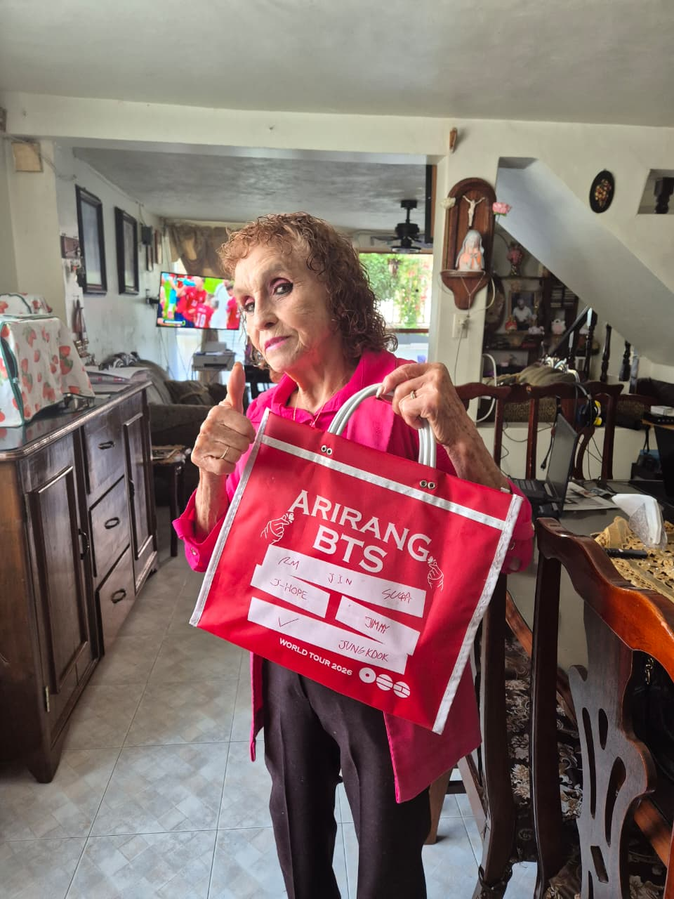

Elección de la Tita

Este recetario es más que ingredientes y pasos; es un homenaje al cariño, a las comidas en familia y al legado de nuestra Tita. Cada platillo está sazonado con amor y preservado para unirnos siempre en la mesa.